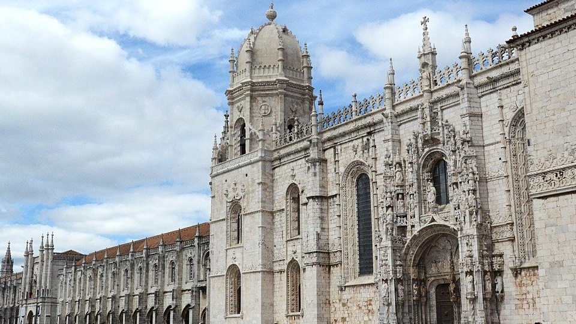
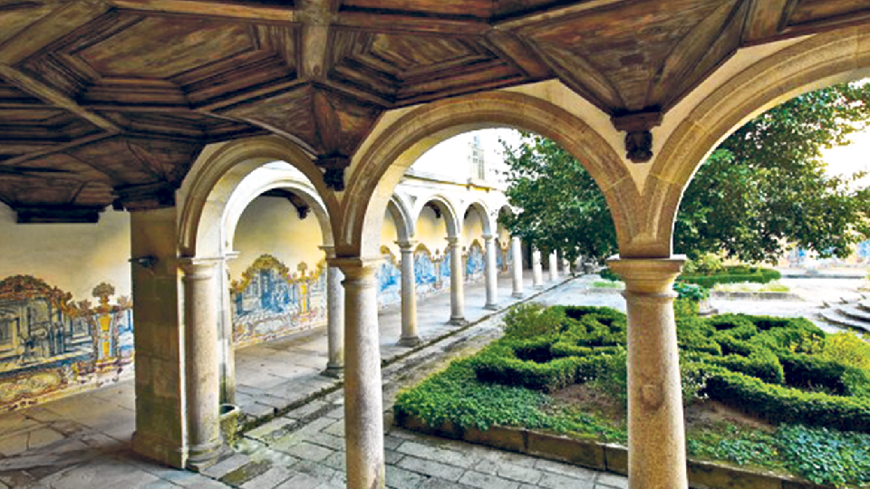

Mosteiro dos Jeronimos
 Mosteiro da Batalha
Mosteiro da Batalha
Mosteiro de Alcobaça
 Mosteiro de Braga
Mosteiro de Braga
O Mosteiro dos Jerónimos é o mais impressionante símbolo do poder e da riqueza de Portugal durante a era dos Descobrimentos. Foi construído para comemorar a viagem de Vasco da Gama e dar graças à Virgem Maria para o seu sucesso. O túmulo de Vasco da Gama foi colocado dentro da entrada, assim como o túmulo do poeta Luís de Camões, autor do épico Os Lusíadas, no qual ele glorifica os triunfos da Vasco Da Gama e seus compatriotas. Outras grandes figuras da história portuguesa também estão sepultadas aqui, como D. Manuel, o rei D. Sebastião e os poetas Fernando Pessoa e Alexandre Herculano.
São milhares de fortificações que foram erguidas na Idade Média e estão espalhadas por todo Velho Continente. Após muito trabalho e muitos castelos percorridos, elaboramos uma lista com os dez castelos mais bonitos de Portugal.
Lista dos Mosteiros:
Mosteiro da BatalhaMosteiro de Braga
Mosteiro de Óbidos
Copyright © 2025 - Formador Kundan e Formando Álvaro Faria - Todos os Direitos Reservados